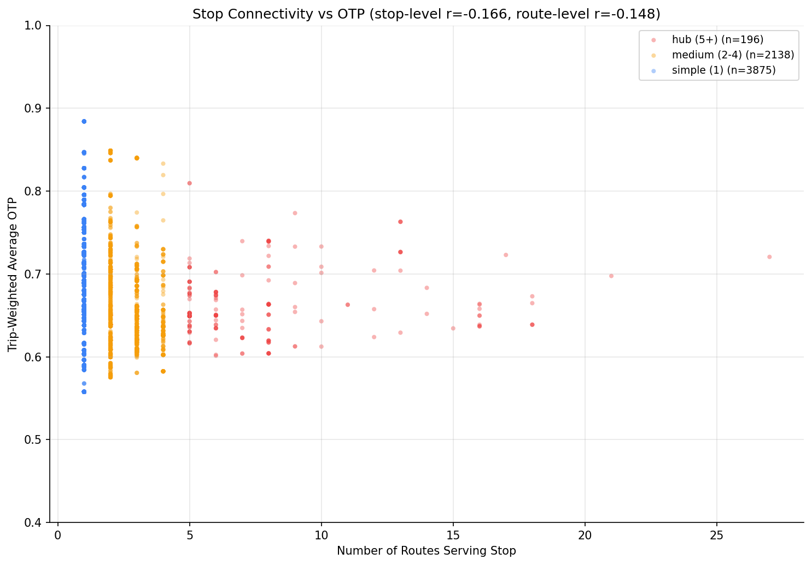
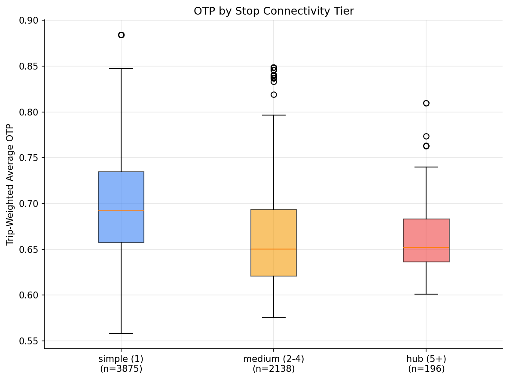

Analysis
16: Transfer Hub Performance
Route and Service Drivers
Coverage: 2019-01 to 2025-11 (from otp_monthly).
Built 2026-06-05 17:09 UTC · Commit 5dead49
Page Navigation
Analysis Navigation
Data Provenance
flowchart LR
16_transfer_hub_performance(["16: Transfer Hub Performance"])
t_otp_monthly[("otp_monthly")] --> 16_transfer_hub_performance
01_data_ingestion[["Data Ingestion"]] --> t_otp_monthly
u1_01_data_ingestion[/"data/routes_by_month.csv"/] --> 01_data_ingestion
u2_01_data_ingestion[/"data/PRT_Current_Routes_Full_System_de0e48fcbed24ebc8b0d933e47b56682.csv"/] --> 01_data_ingestion
u3_01_data_ingestion[/"data/Transit_stops_(current)_by_route_e040ee029227468ebf9d217402a82fa9.csv"/] --> 01_data_ingestion
u4_01_data_ingestion[/"data/PRT_Stop_Reference_Lookup_Table.csv"/] --> 01_data_ingestion
u5_01_data_ingestion[/"data/average-ridership/12bb84ed-397e-435c-8d1b-8ce543108698.csv"/] --> 01_data_ingestion
t_route_stops[("route_stops")] --> 16_transfer_hub_performance
01_data_ingestion[["Data Ingestion"]] --> t_route_stops
t_routes[("routes")] --> 16_transfer_hub_performance
01_data_ingestion[["Data Ingestion"]] --> t_routes
t_stops[("stops")] --> 16_transfer_hub_performance
01_data_ingestion[["Data Ingestion"]] --> t_stops
d1_16_transfer_hub_performance(("polars (lib)")) --> 16_transfer_hub_performance
d2_16_transfer_hub_performance(("scipy (lib)")) --> 16_transfer_hub_performance
classDef page fill:#dbeafe,stroke:#1d4ed8,color:#1e3a8a,stroke-width:2px;
classDef table fill:#ecfeff,stroke:#0e7490,color:#164e63;
classDef dep fill:#fff7ed,stroke:#c2410c,color:#7c2d12,stroke-dasharray: 4 2;
classDef file fill:#eef2ff,stroke:#6366f1,color:#3730a3;
classDef api fill:#f0fdf4,stroke:#16a34a,color:#14532d;
classDef pipeline fill:#f5f3ff,stroke:#7c3aed,color:#4c1d95;
class 16_transfer_hub_performance page;
class t_otp_monthly,t_route_stops,t_routes,t_stops table;
class d1_16_transfer_hub_performance,d2_16_transfer_hub_performance dep;
class u1_01_data_ingestion,u2_01_data_ingestion,u3_01_data_ingestion,u4_01_data_ingestion,u5_01_data_ingestion file;
class 01_data_ingestion pipeline;
Findings
Findings: Transfer Hub Performance
Summary
Higher-connectivity stops appear to have modestly worse OTP in stop-level data, but this finding does not survive correction for non-independence. At the route level (independent observations), the correlation between stop connectivity and OTP is not significant (r = -0.15, p = 0.16). The apparent "hub penalty" is a composition effect driven by inflated sample size at the stop level.
Key Numbers
| Tier | Stops | Mean OTP | Median OTP |
|---|---|---|---|
| Simple (1 route) | 3,875 | 69.5% | 69.2% |
| Medium (2-4 routes) | 2,138 | 66.0% | 65.0% |
| Hub (5+ routes) | 196 | 66.4% | 65.2% |
Stop-level (n=6,209 -- non-independent, inflated power):
- Pearson r = -0.17 (p < 0.001)
- Spearman rho = -0.32 (p < 0.001)
Route-level (n=93 -- independent observations):
- Pearson r = -0.15 (p = 0.16)
Route-level, bus only (n=90):
- Pearson r = -0.09 (p = 0.39)
Observations
- The stop-level correlations (r = -0.17, rho = -0.32) are statistically significant but misleading: the 6,209 "stops" are not independent observations. Stops on the same route share the same underlying OTP, so the effective sample size is closer to ~90 (the number of distinct routes). With n_eff ~ 90, a correlation of r = -0.15 yields p = 0.16, which is not significant.
- The route-level analysis confirms this: average stop connectivity per route has no significant relationship with route OTP (r = -0.15, p = 0.16). Within bus routes only, the relationship is even weaker (r = -0.09, p = 0.39).
- The 3.5 pp tier gap (simple 69.5% vs hub 66.4%) is real in the raw data but reflects a composition effect: hubs are served by many routes including poor-performing local bus routes, which drag down the average. The hub location itself is not causing worse OTP.
- The busiest hub (East Busway Penn Station, 27 routes) actually outperforms the system average (72.1%) because it sits on dedicated right-of-way.
Implication
Being a transfer hub does not independently predict worse OTP. The apparent hub penalty is driven by which routes converge there. Policy should focus on improving the poorly-performing routes themselves, not on the hub locations.
Caveats
- This analysis uses route-level OTP projected onto stops (ecological fallacy). We don't have stop-level OTP data; a route's on-time performance may vary along its length.
- The route-level analysis uses "average stop connectivity per route," which is itself an approximation. A more direct test would require stop-level arrival data.
Review History
- 2026-02-10: RED-TEAM-REPORTS/2026-02-10-analyses-12-18.md — 3 issues (2 significant). "Hub penalty" finding retracted; route-level analysis now primary.
Output

scatter plot of routes-per-stop vs OTP.

box plot of OTP by hub tier.
No interactive outputs declared.
per-stop connectivity, OTP, and classification.
Preview CSV
Methods
Methods: Transfer Hub Performance
Question
Do passengers at major transfer hubs -- stops served by many routes -- experience worse reliability than passengers at simpler stops? This matters because transfer hub passengers are disproportionately transit-dependent and a missed connection at a hub cascades into longer wait times.
Approach
- Count distinct routes per stop from
route_stopsto measure connectivity (number of routes serving each stop). - For each stop, compute a trip-weighted average OTP across all routes serving it.
- Classify stops as hubs (5+ routes), medium (2-4 routes), or simple (1 route).
- Compare OTP distributions across these tiers.
- Identify the busiest hubs and their OTP.
- Scatter plot of connectivity vs stop-level OTP.
Data
| Name | Description | Source |
|---|---|---|
route_stops |
Which routes serve which stops, with trip counts | prt.db table |
stops |
Stop names and coordinates | prt.db table |
otp_monthly |
Monthly OTP per route | prt.db table |
routes |
Mode for context | prt.db table |
Output
Source Code
|
Sources
| Name | Type | Why It Matters | Owner | Freshness | Caveat |
|---|---|---|---|---|---|
| otp_monthly | table | Primary analytical table used in this page's computations. | Produced by Data Ingestion. | Updated when the producing pipeline step is rerun. | Coverage depends on upstream source availability and ETL assumptions. |
Upstream sources (5)
|
|||||
| route_stops | table | Primary analytical table used in this page's computations. | Produced by Data Ingestion. | Updated when the producing pipeline step is rerun. | Coverage depends on upstream source availability and ETL assumptions. |
Upstream sources (5)
|
|||||
| routes | table | Primary analytical table used in this page's computations. | Produced by Data Ingestion. | Updated when the producing pipeline step is rerun. | Coverage depends on upstream source availability and ETL assumptions. |
Upstream sources (5)
|
|||||
| stops | table | Primary analytical table used in this page's computations. | Produced by Data Ingestion. | Updated when the producing pipeline step is rerun. | Coverage depends on upstream source availability and ETL assumptions. |
Upstream sources (5)
|
|||||
| polars | dependency | Runtime dependency required for this page's pipeline or analysis code. | Open-source Python ecosystem maintainers. | Version pinned by project environment until dependency updates are applied. | Library updates may change behavior or defaults. |
| scipy | dependency | Runtime dependency required for this page's pipeline or analysis code. | Open-source Python ecosystem maintainers. | Version pinned by project environment until dependency updates are applied. | Library updates may change behavior or defaults. |